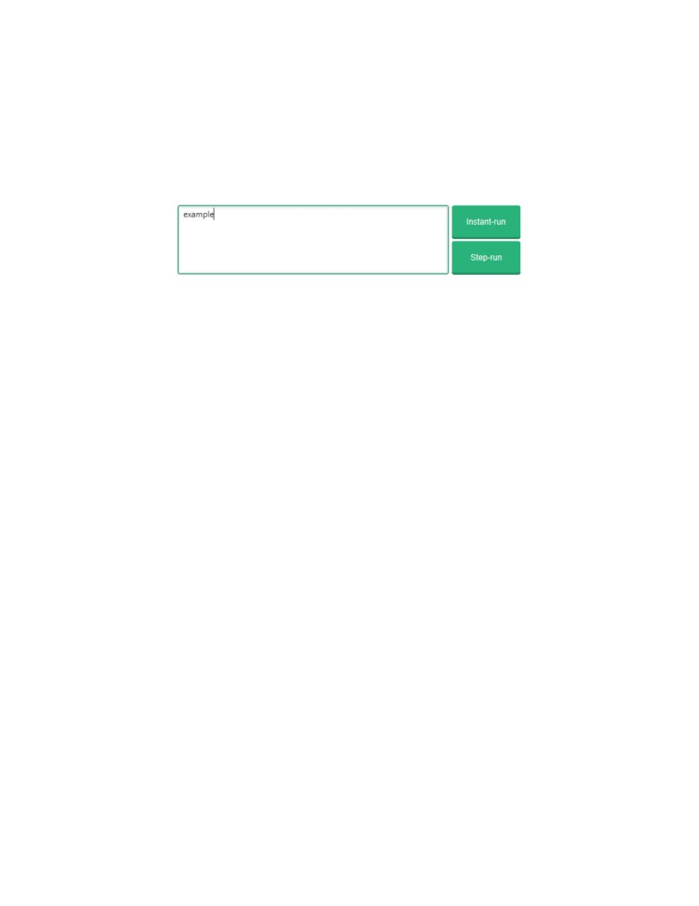
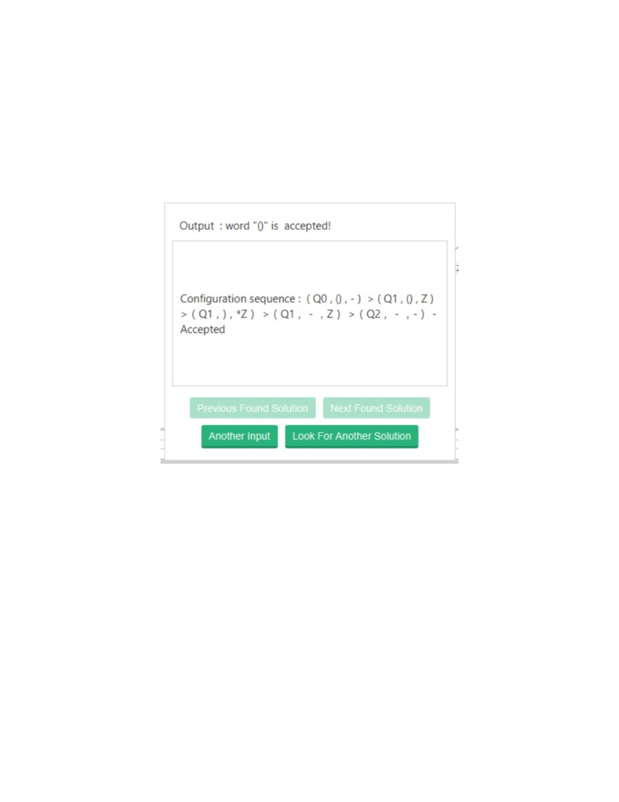
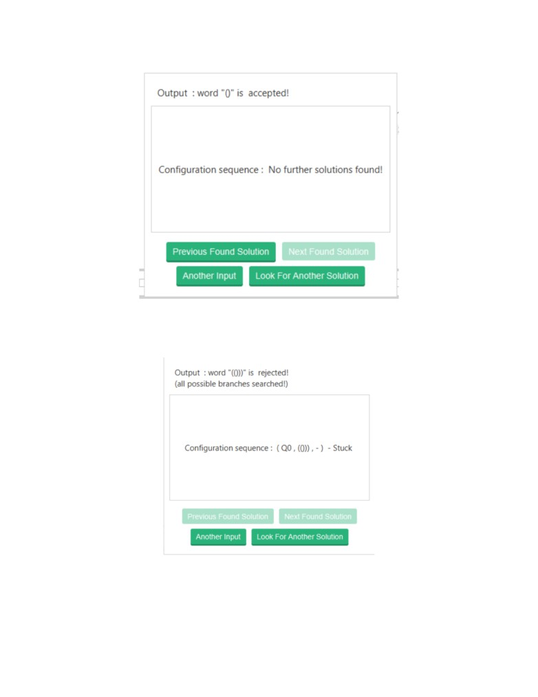
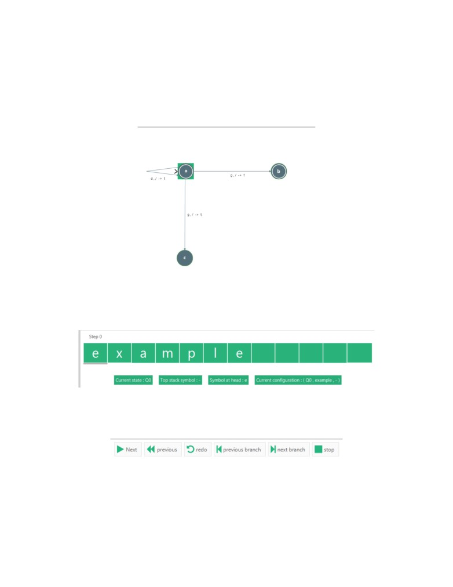
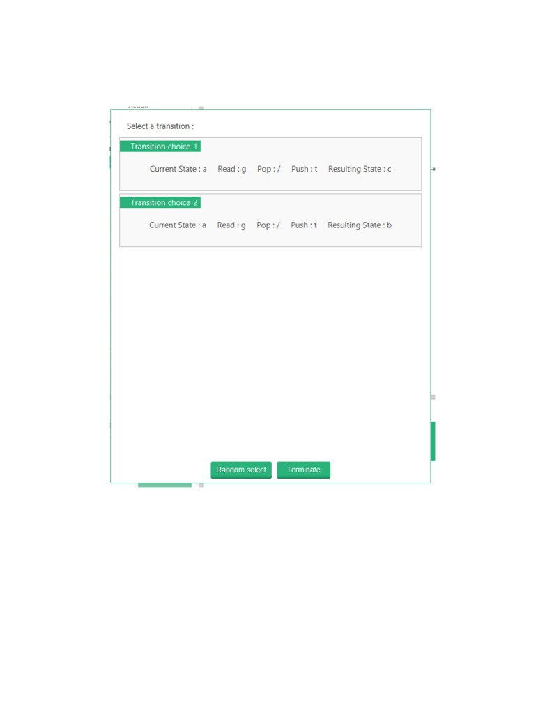
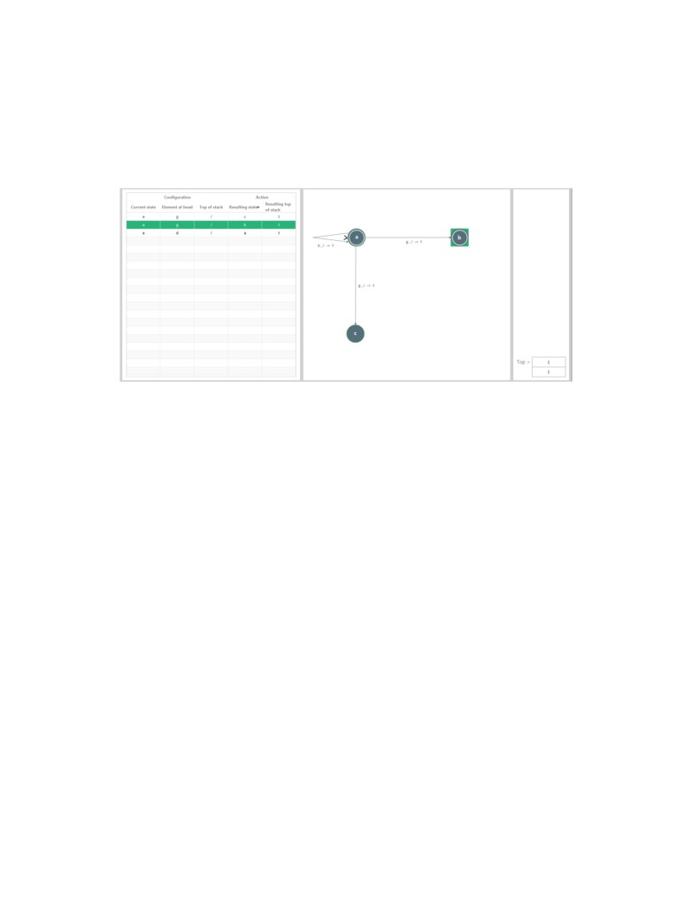
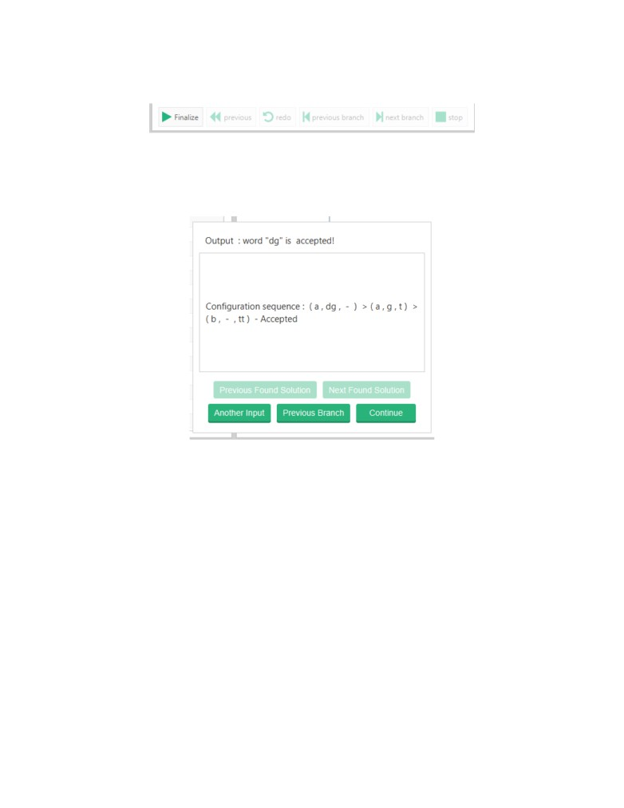
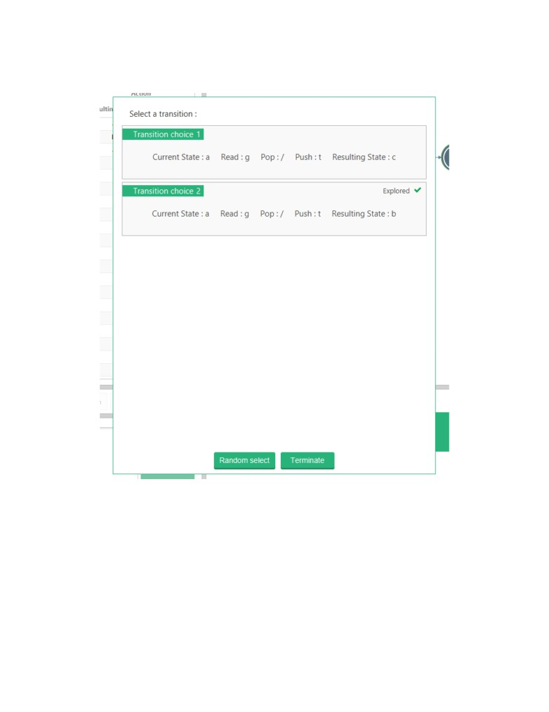
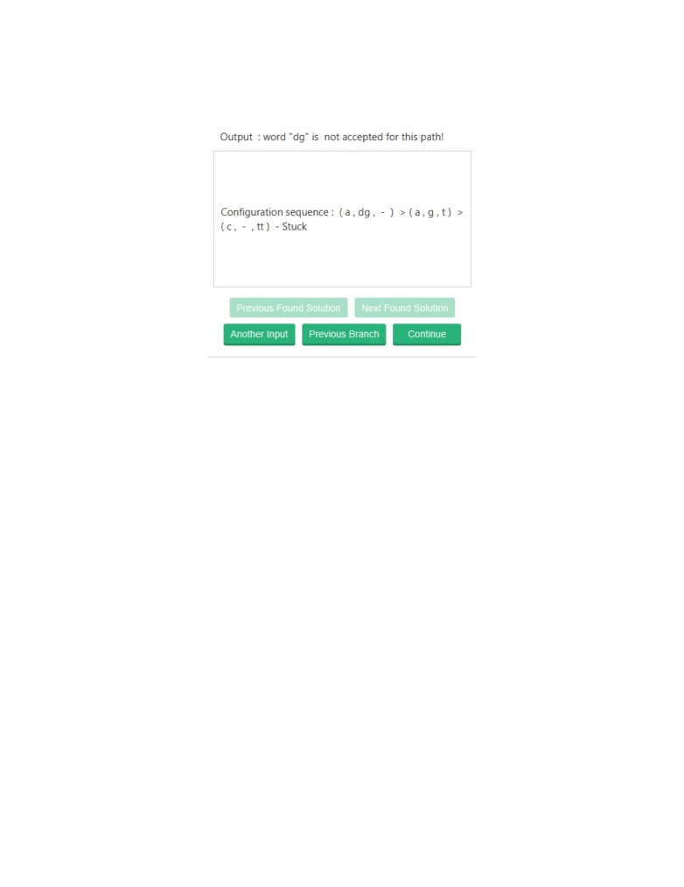

B.2
Run Modes
The user specifies the desired input they want to run on the currently loaded PDA by defining
it in the text box found in the bottom left of the screen. After the user has decided what input
they want to be executed, they can choose their desired run mode. A PDA must be loaded
before any input can be entered.
There are two modes in which a user can run input in. The first of which is instant-run.
Instant-run looks for a solution by exhaustively searching all possible branches. When a solution
has been found it is returned to the user. If all branches have been searched and no solution
is found then the results is shown to the user. The other is step-run which is a guided step-
bystep walk-through of a run. They both require valid user input. The main difference between
the two is instant-run is immediate and computer-controlled, and step-run is spread out and
requires user interaction for progression.
80

B.2.1
Instant-run
In order to initiate instant-run, the desired input is specified in the text box, and the ”Instant-
run” button is pressed.
Instant-run should immediately evaluate the input.
If the PDA accepts an input, the accept dialogue will be shown. Contained within the accept-
dialogue is the accepting sequence of configurations.
The user can look for more solutions. This requires the application to search more of the
possible branches in the computation.
81

If there are no further solutions, then the application will alert the user.
In the case of the PDA rejecting an input, the reject dialogue is shown to the user. This can
only occur after all branches have been searched.
82

B.2.2
Step-run
Step-run can be initiated much the same way. The desired input is specified in the text box,
and the ”Step-run” button is pressed.
The current state in the PDA is highlighted in the visual PDA. To start with, this is the initial
state of the PDA.
The input is loaded into the tape, with the variables of the PDA clearly represented below.
The entering of step-run mode should unlock the action bar. The action buttons represent the
different ways in which a user can manipulate the current execution.
83

’Next’ executes the next transition in the computation. If there is more than one possible
transition that can be executed, then the transition option box is opened, allowing the user to
select the transition.
The user can leave the choice to the application, via the ”Random select” feature.
84

Once the transition has been decided, the changes are visually represented in the PDA. The
transition is highlighted in the table and in the visual PDA display. The resulting state of the
transition becomes the new highlighted state in the visual. All components update to reflect
these changes.
Other actions
”Previous” - action takes the PDA instance back to the previous configuration, truncating
the previously applied transition.
”Next branch” - takes the PDA instance to the next instance where there is more than one
possible transition to select from. For ”next branch”, if there are no instances, then the execu-
tion just progresses until the PDA terminates.
”Previous branch” - works much the same way but going back to the previous instance
where there is more than one transition to chose from. With ”previous branch”, if there are
no previous instances of branching, then the current configuration goes all the way back to the
initial configuration.
”Stop” - terminates the execution, clear’s the tape and empties the stack.
”Redo” - resets the current PDA instance to the initial configuration, moves the head back to
start of tape and starts a new execution instance
85

When all input symbols have been read, the PDA machine is ready to output results. The
user can press ”finalize” in the action bar to open the results pane.
If the word is accepted then the sequence of configurations which derived that evaluation is
shown.
The user has a choice either to look for another solution via the ”Previous branch” feature or
enter another input.
86

Clicking on ”Previous branch” will open the previous transition choice made.
Notice how the explored tick signifies that the branch has already been explored. It doesn’t
mean that the branch doesn’t contain an accepting configuration, but rather it’s a record of
previously visited branches.
87

This dialogue will open when a branch doesn’t result in an accepting configuration.
88